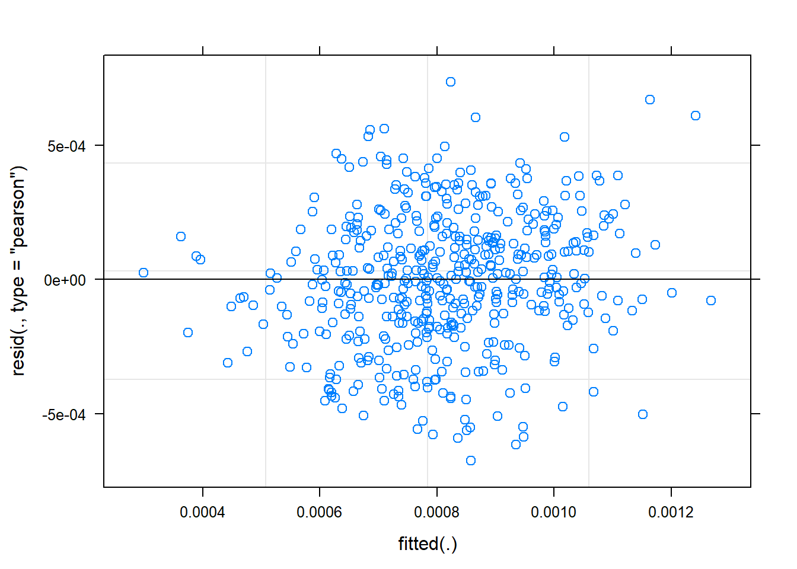

In our regression model, we only considered one source of variance - the random sample of participants that we tested from the population. In mixed effects models, we can consider more than one source. Often in psychology experiments, we might also want to consider the sample of stimuli that we incorporated (from all possible stimuli that we could have used). Just as we have some participants that show higher performance than others, we will likely have some items that show higher performance than others.
Fixed effects are your key predictors of interest. They can be continuous or categorical.
Random effects have to be categorical - they are modelling clusters of observations in the dataset, so we are dealing with sub-samples.
If we fit the model such that the intercept represents average performance (as is the case when we have centred our predictors), then random intercepts model the variance of each group’s average performance.
Random slopes allow us to model the way in which our sub-groups might not only vary in their average performance, but also in their response to the fixed effects of interest.
We will be working with the same dataset as in the regression modelling introduction. This time, we’ll be working directly with the long dataframe that we read in. You might still have it in your environment, but if not then you can re-load it as follows.
library(tidyverse)
pn_long <- read_csv("https://raw.githubusercontent.com/emljames/YSJ_R_workshop/master/data/AMPM_subset.csv")As with the standard regression model, the first step is to make sure that our predictors are as we would want. You can repeat the steps from the last session to do this, just using the pn_long dataframe now rather than our participant averages.
Exercise:
sleep_wake predictor, such that “wake” is -1 and “sleep” is +1. Remember, you might need to re-format the variable as a factor!session predictor, such that they are similarly coded to -1 and 1.vocab predictor, storing it as vocab_s.pn_long$sleep_wake <- as.factor(pn_long$sleep_wake)
pn_long$session <- as.factor(pn_long$session)
contrasts(pn_long$sleep_wake) <- c(-1, 1)
contrasts(pn_long$sleep_wake)## [,1]
## sleep -1
## wake 1contrasts(pn_long$sleep_wake) <- c(-1, 1)
contrasts(pn_long$sleep_wake) ## [,1]
## sleep -1
## wake 1pn_long$vocab_s <- scale(pn_long$vocab, center = TRUE, scale = TRUE)Each participant in our dataset was trained on 24 new words. These were actually 2 lists of 12 words - they learned one list for each of the sleep/wake conditions, and the order was counterbalanced across participants. So rather than computing average scores like we did in the last chapter, we want to include all these datapoints for each participant.
This means that we have two types of random effect in the dataset:
ID - we have multiple observations (words) collected from the same personitem trained - we have multiple responses (participants) for each wordOne of the most frequently used packages for mixed effects modelling is lme4. For linear models, lme4 doesn’t provide significant tests by default. This is in part because there are a few different ways that one could obtain p-values from these models. You can read about these further down the line if you choose (e.g., Luke, 2016. However, for today we’ll also load lmerTest - a handy package that does this for us.
library(lme4)
library(lmerTest) # Note, we might have to install this first! Let’s start with the response time data this time. We use the lmer() function to fit a linear mixed effects regression. The first argument should look familiar from the last chapter: we enter the formula to specify our outcome measure (RT) and predictors of interest (now “fixed effects”, sleep_wake*session). The last part should look familiar too - we need to tell it where to find the dataset.
mem_rt_1 <- lmer(RT ~ sleep_wake*session + (1|ID) + (1|item), data = pn_long)…then you can see we have two extra bits to specify random intercepts. (1|ID) specifies that we will model varying intercepts per participant ID, and (1|item) specifies varying intercepts per word item. The 1 is R notation for the intercept - we could specify 1 in our fixed effects if we wanted, but there’s no need as it’s automatically assumed.
Let’s call summary() on our fitted model to see the results:
summary(mem_rt_1)## Linear mixed model fit by REML. t-tests use Satterthwaite's method ['lmerModLmerTest']
## Formula: RT ~ sleep_wake * session + (1 | ID) + (1 | item)
## Data: pn_long
##
## REML criterion at convergence: 8075.2
##
## Scaled residuals:
## Min 1Q Median 3Q Max
## -1.4294 -0.5214 -0.2590 0.1489 5.2558
##
## Random effects:
## Groups Name Variance Std.Dev.
## ID (Intercept) 88679 297.8
## item (Intercept) 80437 283.6
## Residual 769982 877.5
## Number of obs: 492, groups: ID, 34; item, 24
##
## Fixed effects:
## Estimate Std. Error df t value Pr(>|t|)
## (Intercept) 1780.72 102.68 52.96 17.343 < 2e-16 ***
## sleep_wake1 20.48 61.67 467.85 0.332 0.73996
## session2 -213.29 81.34 449.98 -2.622 0.00904 **
## sleep_wake1:session2 164.65 81.59 450.29 2.018 0.04418 *
## ---
## Signif. codes: 0 '***' 0.001 '**' 0.01 '*' 0.05 '.' 0.1 ' ' 1
##
## Correlation of Fixed Effects:
## (Intr) slp_w1 sessn2
## sleep_wake1 -0.078
## session2 -0.450 0.101
## slp_wk1:ss2 0.074 -0.731 -0.026The output follows a pretty similar structure to our earlier regression, but with some extra bits. We now have a section for Random effects - it tells us the parameters we had included in the model, and spread of those random intercepts around the grand mean (model intercept). We can see that participants are slightly more variable than items. It also helpfully reports the number of observations we modelled, and the numbers associated with each type of grouping - it’s important to check that these are as you would expect!
Adding random intercepts has dealt with our violation of independence (the model now knows that there are clusters of observations in the data). But at the moment it’s only varying the intercepts for those clusters - different participants/items have different average responses, but we haven’t considered that they might differ in their response to the predictor variables. To add random slope to the model, we add it to our specification of the random effects in the formula. Let’s start by adding a single by-participant random slope for the effect of sleep_wake condition, incorporating variation in how different participants responded to the sleep-wake manipulation.
mem_rt_2 <- lmer(RT ~ sleep_wake*session + (1+sleep_wake|ID) + (1|item), data = pn_long)
summary(mem_rt_2)## Linear mixed model fit by REML. t-tests use Satterthwaite's method ['lmerModLmerTest']
## Formula: RT ~ sleep_wake * session + (1 + sleep_wake | ID) + (1 | item)
## Data: pn_long
##
## REML criterion at convergence: 8065
##
## Scaled residuals:
## Min 1Q Median 3Q Max
## -1.9088 -0.4991 -0.2450 0.1593 4.8792
##
## Random effects:
## Groups Name Variance Std.Dev. Corr
## ID (Intercept) 100509 317.0
## sleep_wake1 34439 185.6 0.88
## item (Intercept) 83241 288.5
## Residual 736676 858.3
## Number of obs: 492, groups: ID, 34; item, 24
##
## Fixed effects:
## Estimate Std. Error df t value Pr(>|t|)
## (Intercept) 1808.47 104.69 53.13 17.275 < 2e-16 ***
## sleep_wake1 68.57 70.14 67.61 0.978 0.33179
## session2 -217.49 79.64 436.22 -2.731 0.00657 **
## sleep_wake1:session2 150.48 79.94 438.15 1.882 0.06045 .
## ---
## Signif. codes: 0 '***' 0.001 '**' 0.01 '*' 0.05 '.' 0.1 ' ' 1
##
## Correlation of Fixed Effects:
## (Intr) slp_w1 sessn2
## sleep_wake1 0.194
## session2 -0.433 0.072
## slp_wk1:ss2 0.062 -0.636 -0.015Note that this actually adds two more parameters to the model - as it also models the correlation between the intercept and slope variability (more on this later).
A nice way of viewing the variability we’ve modelled is to inspect the random effect estimates:
# coef(mem_rt_2)$ID # whole dataframe
head(coef(mem_rt_2)$ID) # print top of dataframe ## (Intercept) sleep_wake1 session2 sleep_wake1:session2
## AmPm02a0 1729.943 27.42804 -217.4899 150.4842
## AmPm0a0c 1782.734 13.01427 -217.4899 150.4842
## AmPm0a7c 1623.551 -52.05733 -217.4899 150.4842
## AmPm0cde 1516.940 -104.54400 -217.4899 150.4842
## AmPm10e8 1742.432 19.53950 -217.4899 150.4842
## AmPm181c 2318.392 369.36612 -217.4899 150.4842… we can see that participants vary in their intercept (some are faster on average to name the pictures than others). We can also see that participants vary in how much they vary in speed between the sleep_wake conditions. The next two columns (session, the interaction) show identical values for all participants: this is because we’ve not incorporated this variation in the model.
EXERCISE:
coef(mem_rt_2$item)? Try it to see if your predictions were correct.mem_rt_max <- lmer(RT ~ sleep_wake*session + (1+sleep_wake*session|ID) + (1+sleep_wake*session|item), data = pn_long)Again, there are various ways of checking assumptions of mixed effects models. A linear mixed effects model has many similar assumptions to a standard linear regression, including normlaity of residuals. Plotting the model will enable us to inspect this.
plot(mem_rt_2) Perhaps unsurprisingly, the response time data is skewed, leaving a poor fit of the model for the positive tail. We can deal with these issues in the same ways as we deal with skewed data in traditional analyses, and there may be preferred protocols in different fields. This might involving removing outliers above certain condition thresholds, and/or performing some kind of data transformation (e.g., inverse, log, Box-Cox)
You can do this transformation within your dataframe- compute a new variable, and then use this transformed version in your model. For simple transformations, you can even do this directly in the model formula. For example, rather than listing RT as the dependent variable, we can specify that we want to use the inverse transformation by listing 1/RT.
mem_rt_inv <- lmer(1/RT ~ sleep_wake*session + (1+sleep_wake|ID) + (1|item), data = pn_long)
plot(mem_rt_inv)You can see that transforming the data has improved the distribution of the residuals.
= # Fitting a binomial mixed effects logistic regression model